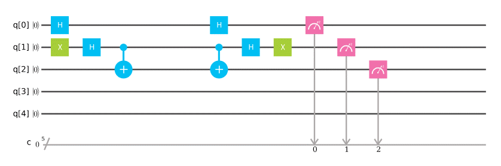
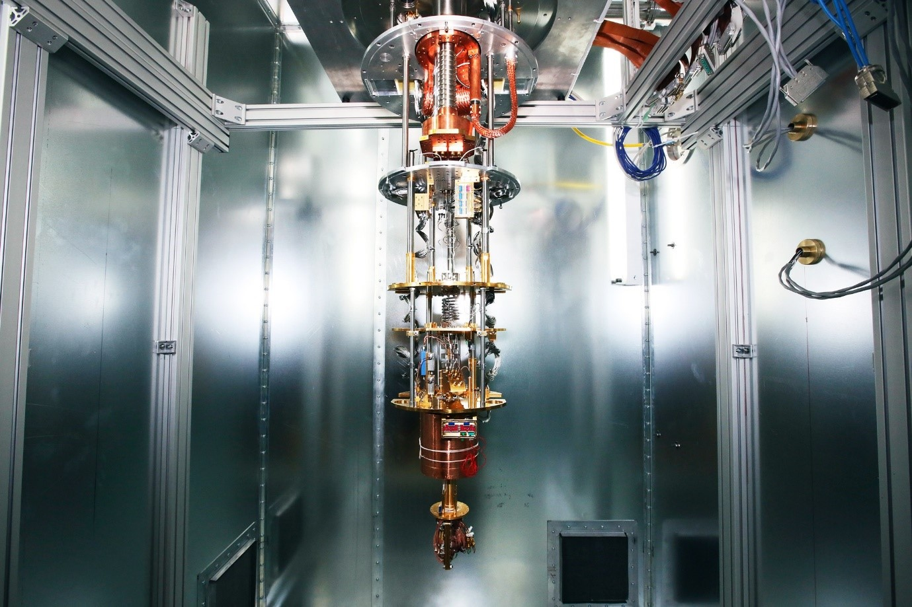

Quantum computing: The leap of computation
31 January, 2020

Quantum computers perform calculations based on the probability of an object's state before it is measured ‐ instead of just 1s or 0s &hypen; which means they have the potential to process exponentially more data compared to classical computers. Quantum computers use qubits instead of traditional bits (binary digits).Qubits are different from traditional bits because until they are read out (meaning measured),they can exist in an indeterminate state where we can't tell whether they'll be measured as a 0 or a 1. That's because of a unique property called superposition.
Superposition makes qubits interesting, but their real superpower is entanglement. Entangled qubits can interact instantly. To make functional qubits, quantum computers have to be cooled to near absolute zero. Even when supercooled, qubits don't maintain their entangled state (coherence) for very long.
That makes programming them extra tricky. Quantum computers are programmed using sequences of logic gates of various kinds, but programs need to run quickly enough that the qubits don't lose coherence before they're measured.For anyone who took a logic class or digital circuit design using flip‐flops, quantum logic gates will seem somewhat familiar, although quantum computers themselves are essentially analogy. However, the combination of superposition and entanglement make the process about a hundred times more confusing.
What is Quantum Hardware?
Like traditional digital computers, quantum computers have three main components: inputs/outputs (I/O), memory, and a processor. The quantum computer's I/O is a physical process of manipulating the states of qubits (more on those in a moment). The qubit manipulation is based on machine states that allow quanta (photonic energy) bits to propagate through the quantum computer. The qubit is the fundamental element of storing a 1, 0, or 0-1 quanta state. Multiple qubits can be grouped to make registers that assist in storing and moving large amounts of quanta data through the quantum system. Like traditional digital computers, the processor is created by using qubit logic gates. The qubit logic gates are constructed to perform complex operations within the quantum computer. An example of quantum logic circuit. (Image source: IBM Research)
Types of quantum computers
Building a functional quantum computer requires holding an object in a superposition state long enough to carry out various processes on them.
Unfortunately, once a superposition meets with materials that are part of a measured system, it loses its in-between state in what's known as decoherence and becomes a boring old classical bit.
Devices need to be able to shield quantum states from decoherence, while still making them easy to read.
Different processes are tackling this challenge from different angles, whether it's to use more robust quantum processes or to find better ways to check for errors.
Quantum computing supremacy
For the time being, classical technology can manage any task thrown at a quantum computer. Quantum supremacy describes the ability of a quantum computer to outperform their classical counterparts.
Some companies, such as IBM and Google, claim we might be close, as they continue to cram more qubits together and build more accurate devices.
Not everybody is convinced that quantum computers are worth the effort. Some mathematicians believe there are obstacles that are practically impossible to overcome, putting quantum computing forever out of reach.
Google's quantum computer performed a task in 200 seconds that would have taken the world's fastest supercomputer 100,000 years.